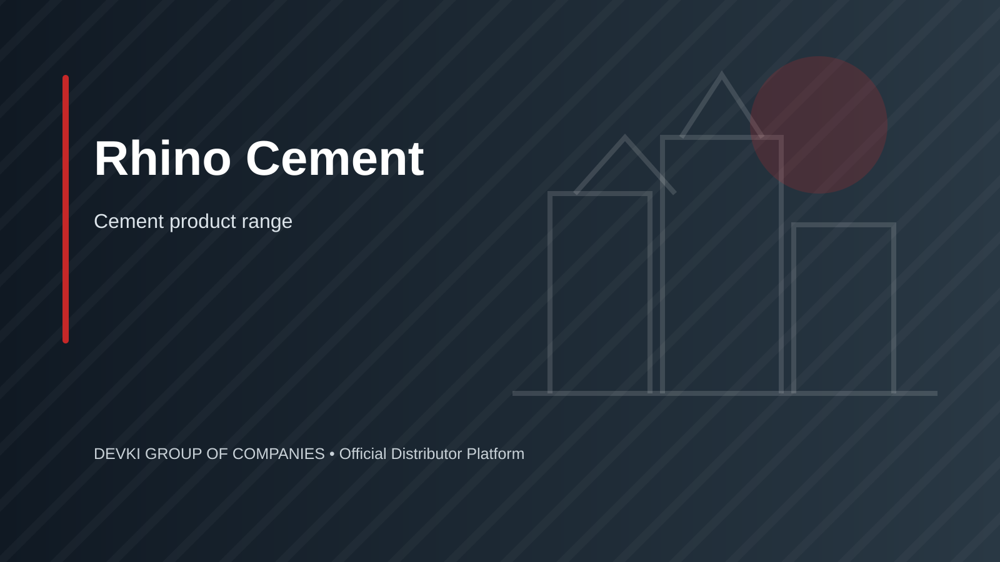

Rhino Cement in Kenya (National Cement Co. Ltd)
Durable building cement manufactured by National Cement Company Limited for general masonry, civil works, and structural concrete across East Africa.
per 50kg bag • Price varies by cement grade.
Confirm the current price, stock, exact specification, minimum order and delivery charge before payment.

Rhino Cement 32.5R & 42.5N
Rhino Cement provides consistent particle size distribution, low heat release during hydration, and strong bonding characteristics with local sands and crushed stone aggregates.
Frequently Asked Questions
Rhino Cement is manufactured by National Cement Company Limited in 32.5R Pozzolana Cement for general walling and plastering, and 42.5N Ordinary Portland Cement for structural concrete works.
Send your delivery destination county and required bag quantity via WhatsApp to +254 735 361 747 to receive an official distributor price quote.
Deliveries across Nairobi, Kiambu, Machakos, Nakuru, Kisumu, and Mombasa are dispatched directly from manufacturing plants and regional stockists within 24 to 48 hours.